flowchart LR
Gazebo["Gazebo: Husky + lidar"] -->|"LaserScan"| Scan["/husky_1/scan"]
Scan --> Node["your node"]
Node -->|"Float32"| Cte["/husky_1/cte"]
Node -->|"Twist"| Cmd["/husky_1/cmd_vel"]
Cmd --> Gazebo
Cte --> Bag["ros2 bag / rqt_plot"]
Introduction to ROS 2
CSC477 Tutorial #2
Concepts, tools, and the plumbing of a robot controller
Conceptual slides adapted from: http://courses.csail.mit.edu/6.141/spring2014/pub/lectures/Lec05-ROS-Lecture.pptm
Updated for ROS 2, with the tools and concepts you will need for Assignment 1.
Outline
- What is ROS, and why does robotics use it?
- ROS 1 vs. ROS 2: what changed, what did not
- Setting up ROS 2 for Assignment 1
- Anatomy of a ROS 2 node in Python (
rclpy) - The messages you need:
LaserScan,Twist,Float32 - Working with laser scans: geometry, sectors, frames
- Anatomy of a controller node
- Parameters, launch files, bags, and debugging tools
- Gazebo and rviz2
- Exercises in
tutorials/w02/code
Part 1: What is ROS?
A meta-operating system for robots
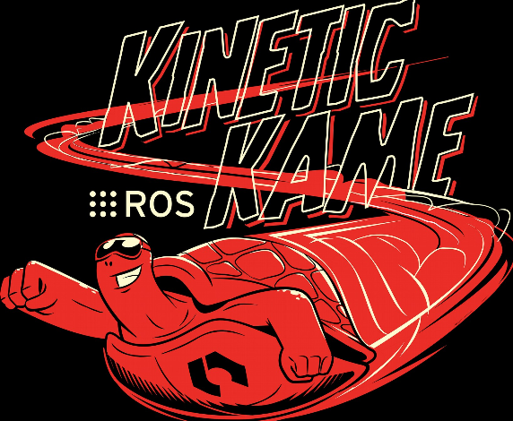
What is ROS?
- A “meta” operating system: not a kernel, but the glue between processes on one or many computers.
- Open source (Apache 2.0 for ROS 2 core; BSD for ROS 1).
- Runs best on Ubuntu Linux; ROS 2 also has Windows and macOS support.
- Nodes: small processes, each doing one job.
- Message passing
- Publish / subscribe on topics (asynchronous streams)
- Services (request / response)
- Actions (long-running goals with feedback; ROS 2 makes these first class)
- Many languages: C++ (
rclcpp) and Python (rclpy) are the official ones; Rust, Java and others exist.
What is ROS?
- Low level device abstraction
- Joystick
- GPS
- Camera
- Controllers
- Laser Scanners
- …
- Application building blocks
- Coordinate system transforms (
tf2) - Visualization tools (
rviz2,rqt) - Debugging tools (
ros2 topic,ros2 bag) - Robust navigation stack (Nav2, SLAM Toolbox)
- Arm path planning (MoveIt 2)
- Object recognition
- …
- Coordinate system transforms (
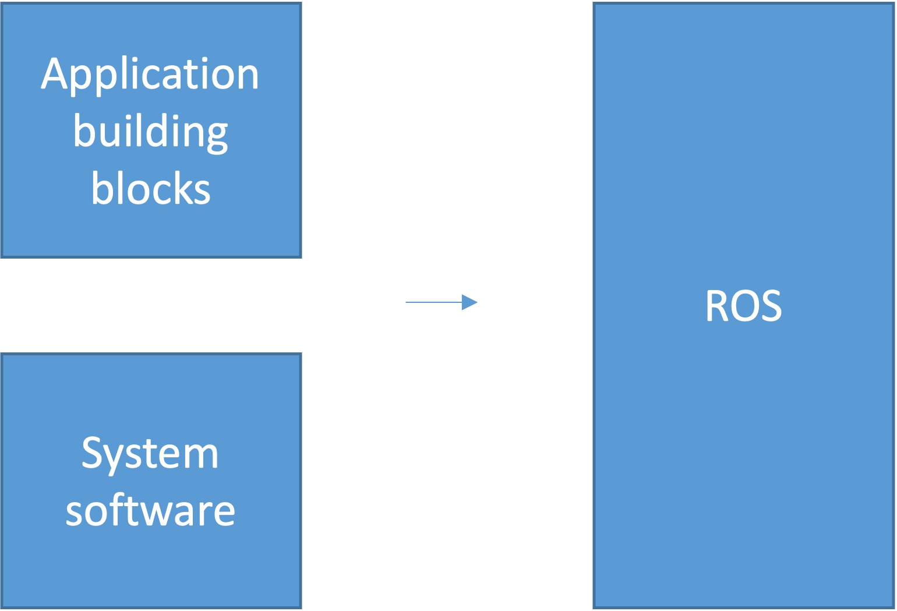
What is ROS?
- Software management (compiling, packaging, dependency resolution)
- Remote communication and control
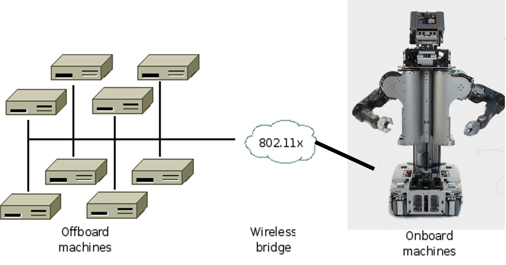
What is ROS?
- Started at Stanford (2007), developed by Willow Garage, now maintained by Open Robotics / the OSRA.
- Exponential adoption
- Countless commercial, hobby, and academic robots use ROS (https://robots.ros.org)
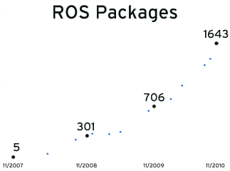
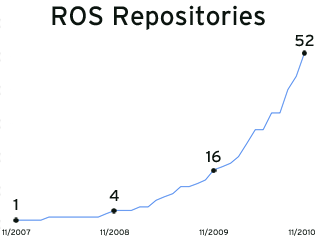
ROS philosophical goals
- “Hardware agnosticism”: the same controller code runs in Gazebo and on a real Husky.
- Peer to peer
- Tools based software design
- Multiple language support (C++ / Python)
- Lightweight: runs only at the edge of your modules
- Free and open source
- Suitable for large scale research and industry
Conceptual levels of design
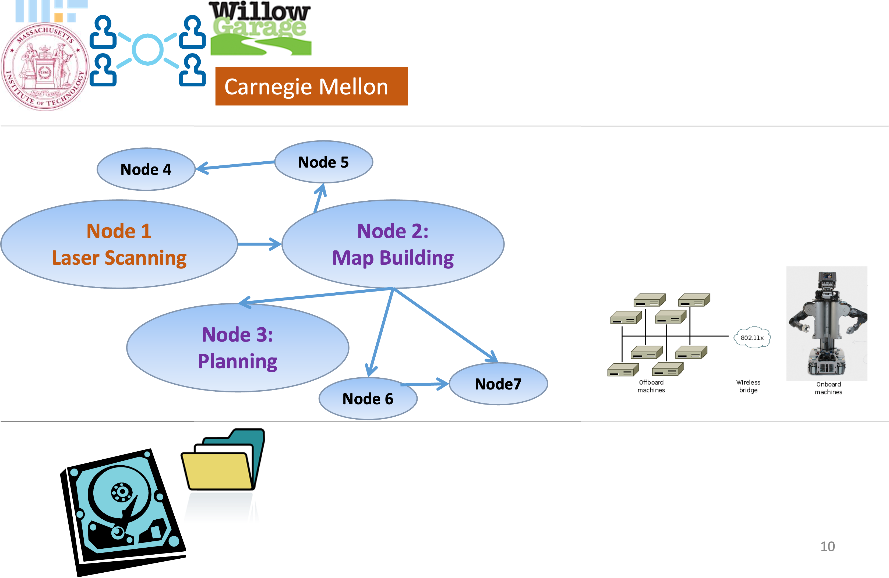
(A) ROS Community: ROS Distributions, Repositories
(B) Computation Graph: Peer-to-Peer Network of
ROS nodes (processes).
(C) File-system level: ROS Tools for managing source code,
build instructions, and message definitions.
Tools-based software design
Tools for:
- Building ROS packages (
colcon build) - Running ROS nodes (
ros2 run,ros2 launch) - Viewing network topology (
rqt_graph) - Monitoring network traffic (
ros2 topic) - Recording and replaying data (
ros2 bag)
Many cooperating processes, instead of a single monolithic program.
Multiple language support
- ROS is implemented natively in each language, on top of a shared C core (
rcl). - Quickly define messages in a language-independent format (
.msgfiles).
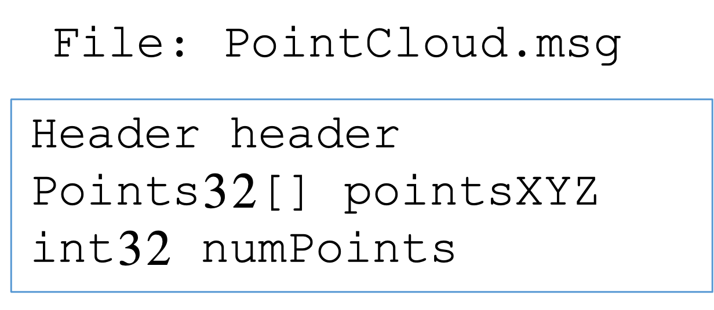
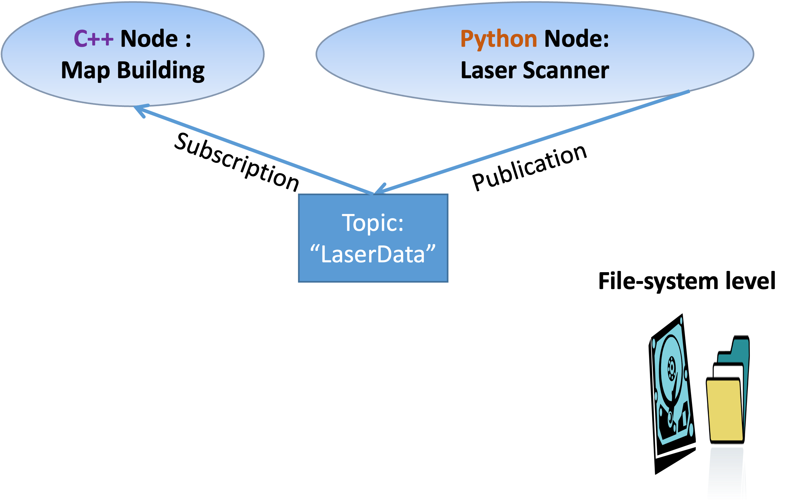
Lightweight
Encourages standalone libraries with no ROS dependencies:
Don’t put ROS dependencies in the core of your algorithm!Use ROS only at the edges of your interconnected software modules: Downstream/Upstream interface.
- For Assignment 1: write your
PIDclass as plain Python. Only the node that subscribes and publishes should importrclpy.
- For Assignment 1: write your
ROS re-uses code from a variety of projects:
- OpenCV : Computer Vision Library
- Point Cloud Library (PCL) : 3D Data Processing
- MoveIt 2 : Motion Planning
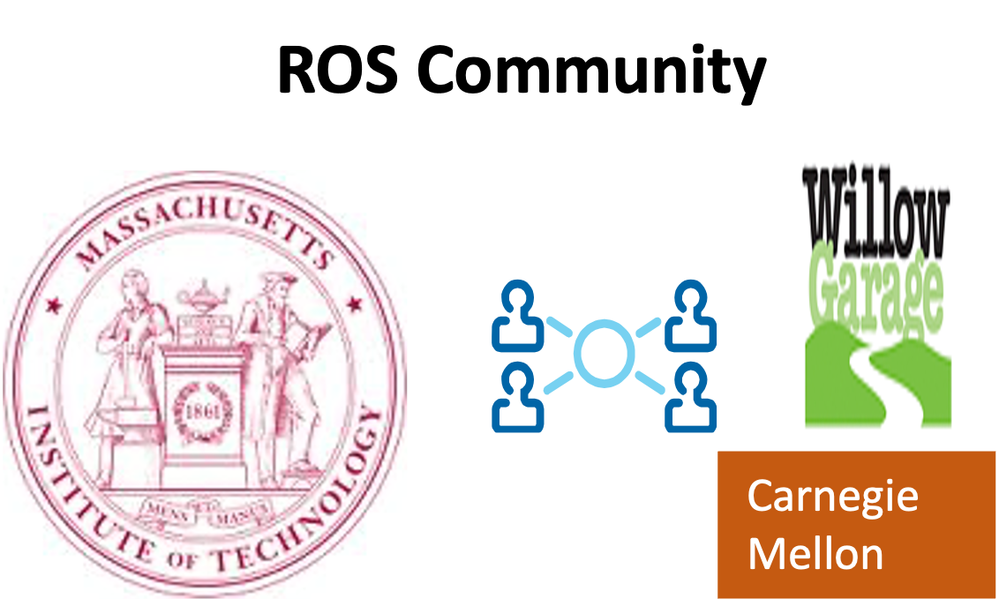
Peer to peer messaging
- No central server through which messages are routed.
- ROS 2: no master at all. Nodes discover each other automatically through DDS (Data Distribution Service) on the local network.
- Messaging types:
- Topics : asynchronous data streaming (many-to-many)
- Services : synchronous request / reply
- Actions : goals with feedback and cancellation
- Parameters : per-node configuration values, settable at runtime
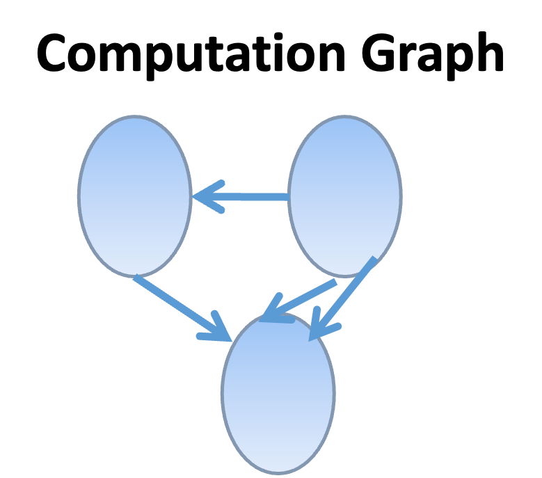
Peer to peer messaging
Discovery: DDS multicasts “I exist, I publish X”; nodes on the same
ROS_DOMAIN_IDfind each other. Noroscore.Publish: Will not block until receipt, messages get queued.
Quality of Service (QoS): Each publisher and subscriber declares a QoS profile: history depth (queue size), reliable vs. best effort, durability. Publisher and subscriber QoS must be compatible or you silently receive nothing.
- Sensor drivers and Gazebo publish laser scans as best effort. Subscribe with
qos_profile_sensor_data.
- Sensor drivers and Gazebo publish laser scans as best effort. Subscribe with
Transport: UDP by default (DDS), shared memory on the same machine.
Free & open source
- Permissive licenses : can develop commercial applications
- Drivers (cameras, lidars, joysticks, IMUs, and others)
- Perception, planning, control libraries (Nav2, MoveIt 2, ros2_control)
- Interfaces to other libraries: OpenCV, PCL, etc.
Part 2: ROS 1 vs. ROS 2
Why ROS 2?
ROS 1 (2007 to 2025) was built for a single robot, on a single trusted network, with a single central master.
ROS 2 (2017 onwards) was redesigned for:
- Multi-robot systems and unreliable networks: DDS middleware, no master, QoS policies.
- Real time and embedded: C core, deterministic executors, micro-ROS on microcontrollers.
- Security: authentication and encryption between nodes (SROS2).
- Production use: lifecycle-managed nodes, first-class actions, typed parameters.
- Cross platform: Linux, Windows, macOS.
ROS 1 Noetic reached end of life in May 2025. Everything new is ROS 2.
ROS 2 distributions
| Distro | Ubuntu | Released | Supported until | Gazebo |
|---|---|---|---|---|
| Humble Hawksbill (LTS) | 22.04 | May 2022 | May 2027 | Fortress |
| Jazzy Jalisco (LTS) | 24.04 | May 2024 | May 2029 | Harmonic |
| Kilted Kaiju | 24.04 | May 2025 | Nov 2026 | Ionic |
| Lyrical Luth (LTS) | 26.04 | May 2026 | May 2031 | Jetty |
- One distro per Ubuntu release; do not mix a distro with a different Ubuntu version.
- For this course we recommend Jazzy on Ubuntu 24.04. Humble also works. Lyrical is very new, so fewer packages are available yet.
- Check yours with
echo $ROS_DISTRO.
What stays the same
The concepts from ROS 1 carry over almost unchanged:
- Nodes, topics, publishers, subscribers, services, messages, parameters
- Message definitions:
sensor_msgs/LaserScan,geometry_msgs/Twist,std_msgs/Float32are the same fields tf2coordinate frame tree,rviz(nowrviz2),rqttools, bag files- Gazebo simulation, URDF robot descriptions
- Package structure: a folder with
package.xmland build instructions
So old ROS 1 tutorials and Stack Overflow answers are still useful for ideas; only the commands and the client-library API differ.
Command cheat sheet: ROS 1 to ROS 2
roscore→ (nothing; no master)catkin_make→colcon buildsource devel/setup.bash→source install/setup.bashrosrun pkg node→ros2 run pkg noderoslaunch pkg f.launch→ros2 launch pkg f.launch.pyrostopic list / echo / hz→ros2 topic list / echo / hzrosnode list / info→ros2 node list / inforosmsg show T→ros2 interface show T
rosparam set→ros2 param setdynamic_reconfigure→ node parameters +rqt_reconfigurerosbag record / play→ros2 bag record / playrosrun rviz rviz→rviz2rosrun tf tf_echo a b→ros2 run tf2_ros tf2_echo a brqt_graph→rqt_graph(unchanged)import rospy→import rclpy#include <ros/ros.h>→#include <rclcpp/rclcpp.hpp>
Python API: rospy vs. rclpy
ROS 1
ROS 2
import rclpy
from rclpy.node import Node
from std_msgs.msg import Float32
class ScanStats(Node):
def __init__(self):
super().__init__("scan_stats")
self.pub = self.create_publisher(
Float32, "/closest", 10)
self.create_subscription(
LaserScan, "/scan", self.cb, 10)
def cb(self, scan):
self.pub.publish(Float32(data=min(scan.ranges)))
rclpy.init()
rclpy.spin(ScanStats())Main difference: in ROS 2 everything hangs off a Node object instead of module-level functions.
Part 3: Setting up ROS 2 for Assignment 1
Install options
- Ubuntu 24.04 (native or dual boot) with Jazzy. Best experience, especially for Gazebo and rviz2.
- Follow https://docs.ros.org/en/jazzy/Installation/Ubuntu-Install-Debs.html
sudo apt install ros-jazzy-desktop ros-jazzy-ros-gz python3-colcon-common-extensions python3-rosdep
- Lab machines: ROS 2 and Gazebo are installed. Use VNC or run locally in the lab.
- macOS / Windows: run Ubuntu 24.04 in a VM (UTM, VirtualBox, WSL2 with WSLg) or in Docker (
osrf/ros:jazzy-desktop-full). Gazebo needs a GPU or software rendering (LIBGL_ALWAYS_SOFTWARE=1), so expect it to be slow.
Sanity check after installing:
Workspace layout
mkdir -p ~/csc477_ws/src
cd ~/csc477_ws/src
git clone <assignment starter code repo>
cd ~/csc477_ws
rosdep install --from-paths src --ignore-src -r -y # pull in dependencies
colcon build --symlink-install
source install/setup.bashsrc/holds packages;build/,install/,log/are generated bycolcon.--symlink-installmeans edits to Python files and launch files take effect without rebuilding.- Add to
~/.bashrcso every new terminal is ready:
- Rebuild only what changed:
colcon build --packages-select wall_following_assignment.
Anatomy of a Python package
csc477_tut02/
├── package.xml # name, version, dependencies (rclpy, sensor_msgs, ...)
├── setup.py # entry points: "obstacle_monitor = csc477_tut02.obstacle_monitor:main"
├── setup.cfg
├── resource/csc477_tut02 # marker file used by ament
├── launch/
│ └── tut02.launch.py
└── csc477_tut02/
├── __init__.py
├── minimal_publisher.py
└── obstacle_monitor.pyros2 pkg create --build-type ament_python --dependencies rclpy sensor_msgs my_pkggenerates this skeleton.- Each entry point in
setup.pybecomes an executable:ros2 run csc477_tut02 obstacle_monitor. - C++ packages use
ament_cmakeand aCMakeLists.txtinstead ofsetup.py.
Part 4: Anatomy of a ROS 2 node
A minimal publisher
import rclpy
from rclpy.node import Node
from std_msgs.msg import String
class MinimalPublisher(Node):
def __init__(self):
super().__init__("minimal_publisher") # node name
self.pub = self.create_publisher(String, "chatter", 10) # type, topic, queue depth
self.timer = self.create_timer(0.5, self.on_timer) # period in seconds
self.count = 0
def on_timer(self):
msg = String()
msg.data = f"Hello ROS 2: {self.count}"
self.pub.publish(msg)
self.get_logger().info(f'Publishing: "{msg.data}"')
self.count += 1
def main():
rclpy.init()
node = MinimalPublisher()
rclpy.spin(node) # blocks; runs timer and subscription callbacks
node.destroy_node()
rclpy.shutdown()A minimal subscriber
import rclpy
from rclpy.node import Node
from std_msgs.msg import String
class MinimalSubscriber(Node):
def __init__(self):
super().__init__("minimal_subscriber")
self.sub = self.create_subscription(String, "chatter", self.on_msg, 10)
def on_msg(self, msg: String):
self.get_logger().info(f'I heard: "{msg.data}"')
def main():
rclpy.init()
rclpy.spin(MinimalSubscriber())
rclpy.shutdown()- Callbacks are only run while the node is being spun. If your node never prints anything, check that you called
rclpy.spin. - Topic names and types must match exactly:
ros2 topic info /chattershows publishers, subscribers, and the type.
Execution model
rclpy.spin(node): single-threaded executor. Callbacks run one at a time, in the order events arrive. Simple and sufficient for Assignment 1.- A long computation inside a callback delays all other callbacks (including the next laser scan). Keep callbacks short.
rclpy.spin_once(node, timeout_sec=...)if you need your own loop.- Multi-threaded executors and callback groups exist for when you need concurrency; not needed here.
Logging levels: self.get_logger().debug / info / warn / error. Filter at runtime with --ros-args --log-level debug.
Time and timestamps
now = self.get_clock().now() # rclpy.time.Time
t = rclpy.time.Time.from_msg(scan.header.stamp)
dt = (now - self.last_time).nanoseconds * 1e-9- Every sensor message has a
header.stamp(when it was measured) andheader.frame_id(which coordinate frame). - Use timestamps, not
time.time(), to computedtin a controller: simulation may run slower or faster than wall clock. - In Gazebo, nodes should use simulated time: launch with parameter
use_sim_time: trueand the/clocktopic drivesget_clock(). WHY?
Part 5: The messages you need
Inspecting message types
ros2 interface show sensor_msgs/msg/LaserScan
ros2 interface show geometry_msgs/msg/Twist
ros2 interface show std_msgs/msg/Float32
ros2 interface list | grep -i laserAssignment 1 data flow:
sensor_msgs/msg/LaserScan
std_msgs/Header header # stamp, frame_id (e.g. "laser")
float32 angle_min # start angle of the scan [rad]
float32 angle_max # end angle of the scan [rad]
float32 angle_increment # angular distance between measurements [rad]
float32 time_increment # time between measurements [s]
float32 scan_time # time between scans [s]
float32 range_min # minimum valid range [m]
float32 range_max # maximum valid range [m]
float32[] ranges # range data [m] (len = (angle_max-angle_min)/angle_increment + 1)
float32[] intensities # may be empty- Beam
iis at angle \(\theta_i = \text{angle_min} + i \cdot \text{angle_increment}\) in theframe_idframe. - Values outside
[range_min, range_max], orinf/nan, mean “no return”: filter them out before taking a minimum.
Frame conventions (REP 103)
- Robot body frame
base_link: x forward, y left, z up. - Angles are counter-clockwise about z: \(\theta = 0\) is straight ahead, \(\theta = +\pi/2\) is the left, \(\theta = -\pi/2\) is the right.
- The Husky lidar frame is usually aligned with
base_link(check withros2 run tf2_ros tf2_echo base_link laser). - So the wall on the robot’s left shows up in the beams with \(\theta \approx +\pi/2\).
- Units: meters, radians, seconds.
Twist.linear.xis m/s,Twist.angular.zis rad/s (positive = turn left).

geometry_msgs/msg/Twist and std_msgs/msg/Float32
from geometry_msgs.msg import Twist
from std_msgs.msg import Float32
cmd = Twist()
cmd.linear.x = 1.0 # forward speed [m/s]; differential drive: linear.y is ignored
cmd.angular.z = omega # yaw rate [rad/s], output of your controller
self.cmd_pub.publish(cmd)
err_msg = Float32()
err_msg.data = float(error) # ROS 2 checks types: numpy.float64 must be cast to float
self.err_pub.publish(err_msg)- A differential drive robot can only realize
linear.xandangular.z. - The velocity controller stops the robot if it does not receive commands for a while: publish on every scan callback.
Part 6: Working with laser scans
From ranges to geometry
import numpy as np
def scan_to_arrays(scan):
ranges = np.asarray(scan.ranges, dtype=float)
angles = scan.angle_min + np.arange(len(ranges)) * scan.angle_increment
valid = np.isfinite(ranges) & (ranges >= scan.range_min) & (ranges <= scan.range_max)
return angles[valid], ranges[valid]
def polar_to_cartesian(angles, ranges):
# points in the laser frame: x forward, y left
return ranges * np.cos(angles), ranges * np.sin(angles)- Work with
numpyarrays, not Python loops: scans have 700+ beams at 10 to 50 Hz. - Always filter first. A single
infinnp.minornp.meansilently poisons the result. - Cartesian points are what you need for fitting lines (least squares, Tutorial 3), building maps, or drawing in
rviz2as aMarker.
Sector summaries
Robots rarely need all 700 beams. Summarize a scan by angular sectors:
def sector_min(angles, ranges, center, half_width):
"""Closest valid return within +/- half_width of `center` (radians), or None."""
window = np.abs(angles - center) < half_width
return float(ranges[window].min()) if window.any() else None
front_clearance = sector_min(angles, ranges, center=0.0, half_width=np.deg2rad(15))- Front clearance is the basis of every emergency stop:
if front_clearance < 0.5: stop. - A sector minimum is robust to single noisy beams; a single beam is not. Consider a low percentile instead of
minfor very noisy sensors. - Handle the
Nonecase: an open doorway or an out-of-range wall is not an error. - Assignment 1 asks you to turn a scan into a scalar error for a controller. Which beams, which statistic, and what sign convention is your design decision; think about it with the sim in Gazebo and
ros2 topic echoin front of you.
Points live in frames
A lidar mounted at \((x_L, y_L)\) with yaw \(\psi_L\) on the robot reports points in the laser frame. To use them together with odometry or a map they must be expressed in base_link or odom:
\[ \begin{bmatrix} x_b \\ y_b \\ 1 \end{bmatrix} = \underbrace{\begin{bmatrix} \cos\psi_L & -\sin\psi_L & x_L \\ \sin\psi_L & \cos\psi_L & y_L \\ 0 & 0 & 1 \end{bmatrix}}_{T^{b}_{L}} \begin{bmatrix} x_L' \\ y_L' \\ 1 \end{bmatrix} \]
- \(T^{b}_{L}\) reads “the pose of
laserexpressed inbase_link”; it maps laser-frame points to body-frame points. - Chain transforms by multiplication: \(T^{o}_{L} = T^{o}_{b}\, T^{b}_{L}\). Invert to go back: \(T^{L}_{b} = (T^{b}_{L})^{-1}\).
- This is exactly what
tf2stores and looks up for you, over time.ros2 run tf2_ros tf2_echo base_link laserprints \(T^{b}_{L}\). - Exercise 2 in
code/standalonemakes you build, chain, and invert these matrices by hand.
Part 7: Anatomy of a controller node
The plumbing, not the math
A closed-loop controller in ROS 2 is a subscriber callback that publishes a command:
class MyController(Node):
def __init__(self):
super().__init__("my_controller")
self.declare_parameter("gain", 1.0) # tunable at runtime
self.cmd_pub = self.create_publisher(Twist, "cmd_vel", 10)
self.dbg_pub = self.create_publisher(Float32, "error", 10) # for plotting / bagging
self.create_subscription(LaserScan, "scan", self.on_scan, qos_profile_sensor_data)
self.last_stamp = None
def on_scan(self, scan: LaserScan):
stamp = Time.from_msg(scan.header.stamp)
dt = 0.0 if self.last_stamp is None else (stamp - self.last_stamp).nanoseconds * 1e-9
self.last_stamp = stamp
error = ... # your perception code: scan -> scalar
u = ... # your control law: error, dt, gains -> command
self.dbg_pub.publish(Float32(data=float(error)))
cmd = Twist(); cmd.linear.x = 1.0; cmd.angular.z = float(u)
self.cmd_pub.publish(cmd)- Perception and control are plain functions with no
rclpyin them: unit test them without ROS. - Publish your intermediate signal (the error) on its own topic. It costs nothing and you will need it for tuning,
rqt_plot, andros2 bag.
Practical control details in ROS 2
dtfrom timestamps, not wall-clock time: Gazebo may run slower or faster than real time. Withuse_sim_time: true,get_clock().now()follows/clock.- Rate: you publish one command per scan (10 to 50 Hz). Missing messages (QoS mismatch) or a slow callback shows up as a lower rate in
ros2 topic hz cmd_vel. - Saturation: real robots have velocity limits. Clamp your output and know when it is clamped.
- Integrators and windup: if you accumulate anything over time, clamp it and reset it when parameters change or the robot is teleoperated.
- Startup: the first callback has no history (
dt = 0, no previous error). Guard against division by zero. - Watchdogs: velocity controllers stop the robot when commands stop arriving. Publishing nothing is a safe default; publishing a stale command is not.
A workflow for Assignment 1
- Bring up the simulation and look before you code:
ros2 topic list,ros2 topic echo --once /husky_1/scan,ros2 topic hz,rviz2with theLaserScandisplay. - Teleoperate and watch the scan change as you drive toward and away from walls. Convince yourself which beam indices see which side of the robot.
- Perception first: write and test the scan-to-scalar function on a recorded bag (
ros2 bag record /husky_1/scan, then replay), publish it, plot it withrqt_plot. - Control second: start with one gain, make it a parameter, tune with
ros2 param setwhile the robot drives. Record the error topic for every run. - Only then worry about corners and edge cases. Keep a log of what each parameter set did.
Part 8: Parameters, launch files, bags, debugging
Configuring Parameters
from rcl_interfaces.msg import SetParametersResult
class MyController(Node):
def __init__(self):
super().__init__("my_controller")
self.declare_parameter("gain", 1.0)
self.gain = self.get_parameter("gain").value
self.add_on_set_parameters_callback(self.on_params) # runs BEFORE the change is applied
def on_params(self, params):
for p in params:
if p.name == "gain":
if p.value < 0.0:
return SetParametersResult(successful=False, reason="gain must be >= 0")
self.gain = p.value # reset any accumulated state here too
self.get_logger().info(f"gain <- {p.value}")
return SetParametersResult(successful=True)ros2 param list /my_controller
ros2 param get /my_controller gain
ros2 param set /my_controller gain 2.5 # takes effect immediately via the callback
ros2 param dump /my_controller > tuned.yaml # save what worked; load with --params-file
ros2 run rqt_reconfigure rqt_reconfigure # GUI sliders (Part C of A1)- Parameters are typed: declaring
gainas1.0(float) meansros2 param set gain 2(int) is rejected. Always pass2.0. - Give parameters a
ParameterDescriptorwith afloating_point_rangeandrqt_reconfigureshows a slider (seeparam_demo.py).
Launch files (Python)
# launch/wall_follower.launch.py
from launch import LaunchDescription
from launch.actions import DeclareLaunchArgument
from launch.substitutions import LaunchConfiguration
from launch_ros.actions import Node
def generate_launch_description():
return LaunchDescription([
DeclareLaunchArgument("desired_distance", default_value="1.0"),
Node(
package="wall_following_assignment",
executable="wall_follower",
name="wall_follower",
output="screen",
parameters=[{
"use_sim_time": True,
"desired_distance": LaunchConfiguration("desired_distance"),
"kp": 1.0, "ki": 0.0, "kd": 0.1,
}],
remappings=[("/scan", "/husky_1/scan")],
),
])Recording and playback with ros2 bag
ros2 bag record -o run1 /husky_1/cte /husky_1/cmd_vel # Ctrl-C to stop
ros2 bag info run1
ros2 bag play run1Export the cross-track error to CSV (Part D of A1). In one terminal:
and in another:
- Bags are directories (
.db3SQLite or.mcap) plus ametadata.yaml, not a single.bagfile. - Alternatively read the bag from Python with
rosbag2_pyor therosbagspip package and plot with matplotlib.
Debugging tools: the ros2 CLI
ros2 node list,ros2 node info /wall_follower: what does the node publish and subscribe to?ros2 topic list -t: active topics with typesros2 topic echo /husky_1/cte: print messagesros2 topic hz /husky_1/scan: is the scan arriving, and at what rate?ros2 topic info -v /husky_1/scan: shows QoS of publishers and subscribers. If your subscriber is not in the list, the QoS is incompatible.ros2 topic pub /husky_1/cmd_vel geometry_msgs/msg/Twist "{linear: {x: 0.5}}": inject a command by handros2 doctor: environment sanity checkros2 run rqt_plot rqt_plot /husky_1/cte/data: live plot
Debugging tools: the ros2 CLI
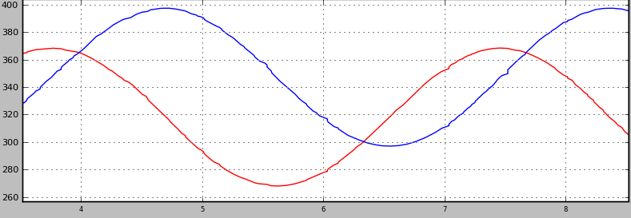
Debugging tools: rqt_graph
rqt_graph shows nodes (ellipses) and topics (rectangles). Use it to confirm your node is connected to both the laser and the velocity controller.
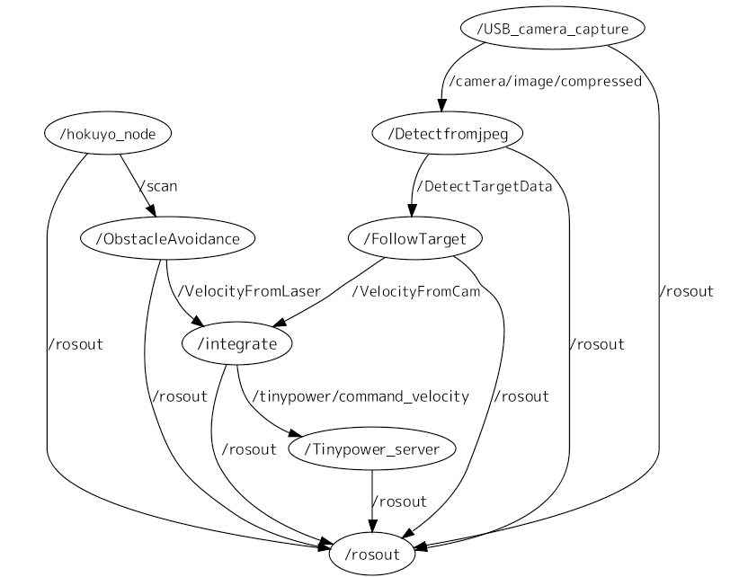
ROS debugging workflow
- Shutdown one node \(\rightarrow\) edit \(\rightarrow\) restart : the rest of the system (Gazebo, rviz2) keeps running.
- With
--symlink-install, Python edits do not even need a rebuild. - Record a bag of the inputs (
/husky_1/scan) once; replay it to test your scan-processing code deterministically without the simulator.
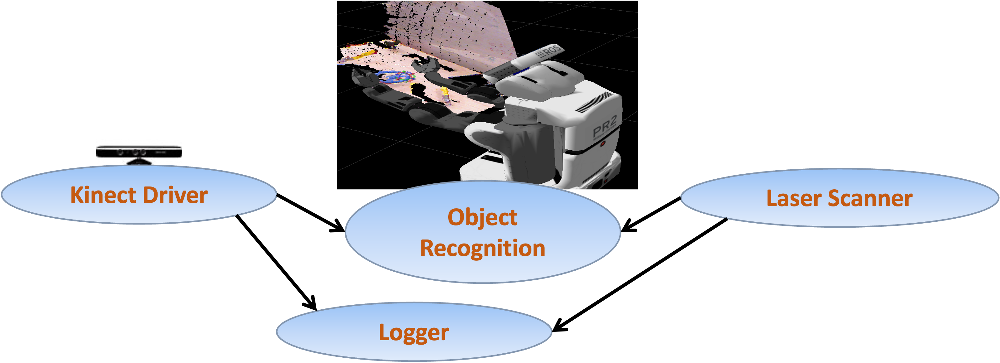
Part 9: Visualization and simulation
ROS visualization: rviz2
Visualize:
- Sensor data (
LaserScanas colored points) - Robot model and joint states
- Coordinate frames (
tf2) - Maps being built
- Debugging 3D markers (
visualization_msgs/Marker)
Set Fixed Frame to odom or base_link; add a LaserScan display and set its topic and QoS to Best Effort.
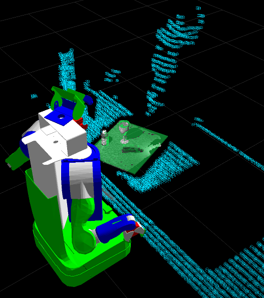
ROS transformations: tf2
tf2maintains a tree of coordinate frames over time (odom→base_link→laser).Query it from the command line:
- From Python:
tf2_ros.Buffer+TransformListener, thenbuffer.lookup_transform("base_link", "laser", Time()). - For A1 you can assume the lidar frame is aligned with the body frame; check once with
tf2_echo.
Simulation: Gazebo
- Modern Gazebo (
gz sim, formerly “Ignition”): Harmonic pairs with Jazzy, Jetty with Lyrical. The old “Gazebo Classic” reached end of life with ROS 1. - Gazebo is a separate process;
ros_gz_bridgetranslates between Gazebo transport and ROS 2 topics (/husky_1/scan,/husky_1/cmd_vel,/clock). - Can simulate different robots, sensors, and environments.
- Develop and test in the simulator; if the model is good enough, the same code will work on the real robot with similar performance.
Packages you will meet later
- Perception
- Point Cloud Library (PCL)
- OpenCV (
cv_bridge) - Depth cameras (RealSense, OAK)
- Navigation: Nav2, SLAM Toolbox
- Manipulation: MoveIt 2
- Control:
ros2_control
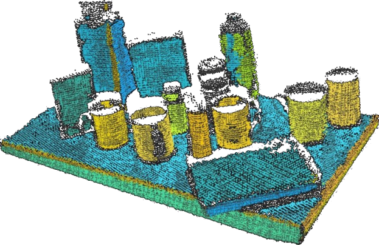
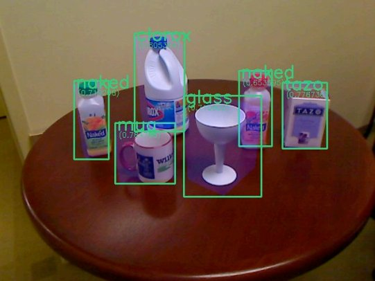
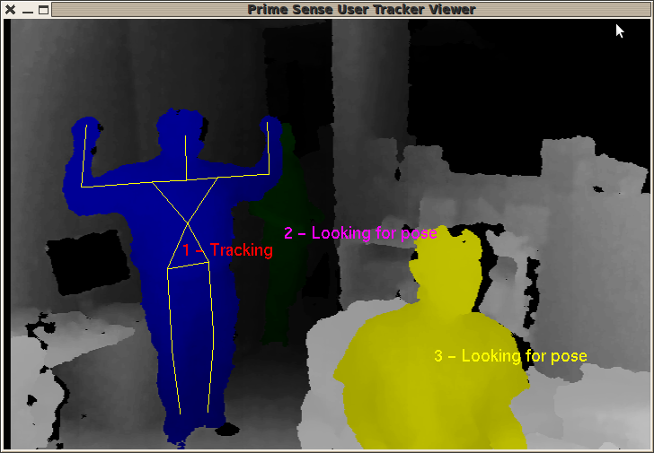
Part 10: Exercises
Exercises: tutorials/w02/code
GitHub ROS 2 needed (colcon build the package ros2_ws_src/csc477_tut02):
minimal_publisher/minimal_subscriber: run them, then inspect withros2 topic,ros2 node,rqt_graph.fake_laser_publisher+obstacle_monitor: complete the monitor so it publishes/front_clearance(Float32) and/obstacle_ahead(Bool); move the simulated obstacle withros2 param setand watch the topics follow.param_demo: changegainat runtime from the CLI and fromrqt_reconfigure.ros2 launch csc477_tut02 tut02.launch.py, thenros2 bag record /front_clearanceand export to CSV.
Common pitfalls
- Forgot to
source install/setup.bashafter building →Package 'x' not found. - Subscriber receives nothing → QoS mismatch (
ros2 topic info -v), or wrong topic name (ros2 topic list), or you never calledrclpy.spin. AssertionError: The 'data' field must be of type 'float'→ castnumpyscalars withfloat().- Robot does not move → the velocity topic name is wrong, or
linear.xis 0, or the simulation is paused. - Everything oscillates wildly →
kptoo large, ordtis wrong (check withros2 topic hz), or the sign ofangular.zis flipped. - Parameters silently ignored → set an
intwhere afloatwas declared, or set them before the node declared them.
ROS resources
- ROS 2 documentation and tutorials: https://docs.ros.org/en/jazzy/
- Beginner tutorials (CLI tools, then client libraries): https://docs.ros.org/en/jazzy/Tutorials.html
rclpyAPI: https://docs.ros.org/en/jazzy/p/rclpy/- Message definitions: https://docs.ros.org/en/jazzy/p/sensor_msgs/
- REP 103 (units and coordinate conventions): https://www.ros.org/reps/rep-0103.html
- Gazebo: https://gazebosim.org/docs
- Q&A: https://robotics.stackexchange.com/ (tag
ros2)